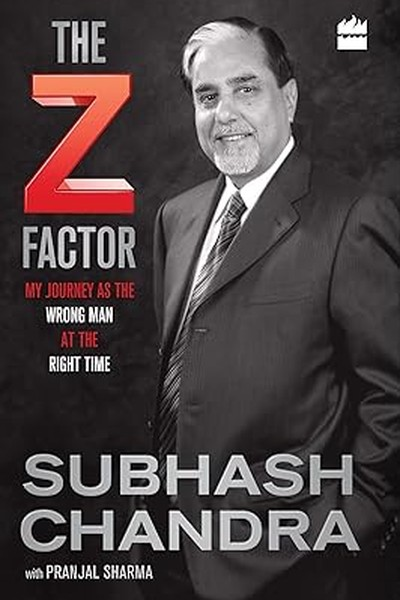

Library › Business & Startups
The Z Factor — Summary & Key Lessons

Zee TV's founder on audacity, debt and comeback.
📖 OPEN THE FULL INTERACTIVE BREAKDOWN →🌐 Read it in Hindi, Hinglish, Gujarati, Tamil & 22 more languages — free, with audio.
💡 The Big Idea
Subhash Chandra — the man who built Zee TV from a small-town trading family into India's first private television empire — tells the story of a lifetime of audacious bets. From rice trading in Haryana to launching a Hindi channel when the state monopoly laughed at him, from Essel World to Zee, from DTH to an $11 billion debt crisis and a comeback, Chandra's memoir is a masterclass in Indian entrepreneurship: risk as a way of life, family as both anchor and burden, and the willingness to keep betting when everyone says you're finished.
🧠 The 7 Key Lessons
Lesson 1: The Bet That Defines You: Zee TV vs the Monopoly
Part 1: The Launch
In 1992, launching a private Hindi TV channel was considered insane — Doordarshan was the law, the government controlled broadcasting, and the idea of 'entertainment on demand' didn't exist in Indian homes. Chandra bet everything anyway: his reputation, his capital, his family's name. The lesson: breakthrough businesses are born when you see a demand that institutions deny. The 'it's impossible' chorus is usually the sound of incumbents protecting their position. The founder who can separate 'actually impossible' from 'nobody has tried' finds the open door.
📖 Example: When Chandra pitched private TV, he was told entertainment was a state function — yet millions of Indians were hungry for exactly the content the state wasn't providing. Zee's first broadcast proved the demand was never the problem; the imagination was. Read the full example →
⚡ Do this: List one demand you see that 'the system' says doesn't exist. Interview five potential users — if the hunger is real, the system is the only barrier.
Lesson 2: Family Business: The Gift and the Trap
Part 2: The Family
Chandra is brutally honest about family business: the family is his strength — loyal capital, trust, shared risk — and his constraint — feuds, expectations, and the impossibility of firing your brother. His lesson: family businesses succeed when roles are clear and fail when love substitutes for governance. The founder who treats family like family and business like business gets both; the one who mixes them gets neither. Write the agreements. Define the roles. The family that can argue about business and still eat dinner together is rare — and unbeatable.
📖 Example: The Goenka-style splits that destroyed many Indian empires loom over Chandra's story — and his own family's cohesion through the Zee years is presented as the quiet reason the empire held together through crisis after crisis. Read the full example →
⚡ Do this: If you work with family (or close friends), write one clear role boundary this week — who decides what, and what happens when you disagree. Paper is cheaper than feuds.
Lesson 3: The Debt Lesson: What $11 Billion Taught
Part 3: The Crisis
Chandra's empire nearly collapsed under massive debt — and he documents the psychology of it: how leverage feels like power until it becomes a leash, and how a founder's confidence can become denial. His lesson: debt is a tool, not an identity — borrow for assets that produce cash, never for ego that consumes it. The founder's hardest skill is distinguishing 'the business needs capital' from 'I want to feel bigger'. The $11 billion crisis was a tuition fee for that distinction, paid in reputation and sleepless nights.
📖 Example: When the music stopped, Chandra had to sell crown jewels — including parts of Zee — to survive. The assets he'd built for decades changed hands in months, because debt had quietly owned the company long before the crisis showed it. Read the full example →
⚡ Do this: Audit your own leverage — financial or otherwise. What do you 'own' that actually owns you? Cut one leash this quarter before the market cuts it for you.
Lesson 4: The Second Act: Reinvention After the Fall
Part 4: The Comeback
After the crisis stripped his empire, Chandra didn't retire — he started again, building new ventures and repositioning what remained. His lesson: the founder's true asset is not the empire but the ability to rebuild one. Institutions fall, reputations dip, money disappears — the capacity to start again survives all of them. The person who defines themselves by their current company is fragile; the person who defines themselves by their builder's instinct is unkillable. Every 'fall' is a first act for someone who refuses to see it as the finale.
📖 Example: Chandra's post-crisis years saw him pivot toward new media, content and infrastructure bets — a man in his sixties behaving like a founder in his twenties. The empire was gone; the builder remained. Read the full example →
⚡ Do this: Write your 'builder assets' — the skills and instincts that survive any single failure. Strengthen one this month so that your second act is always available.
Lesson 5: The Media Lesson: Content Is Culture
Part 5: The Industry
Zee's deeper insight: media doesn't just reflect culture — it shapes it. Chandra understood that Hindi entertainment wasn't a market gap; it was an identity gap — millions of Indians wanted to see their own lives, language and stories on screen. The lesson: the biggest business opportunities are often cultural, not just commercial. The brand that serves an unserved identity — language, region, community — builds loyalty that features can't match. Whoever tells a people's story to themselves owns their attention.
📖 Example: Zee's Hindi-first programming gave a billion people something Doordarshan never did: themselves. The channel wasn't competing on quality; it was competing on belonging — and belonging wins. Read the full example →
⚡ Do this: Ask of your product: whose identity does it serve that no one else serves? If the answer is 'no one specific', find the community whose story you can tell — and serve them first.
Lesson 6: The Long Game: Patience Is a Founder's Weapon
Part 6: The Vision
Chandra's career spans decades of bets that took years to pay — DTH took over a decade to become obvious, Zee took a generation to become legacy. His lesson: the founder's timeline must be longer than the market's attention span. If you can't hold a vision for five years, you'll abandon it in year two when everyone else does. Patience is not passivity — it is the active choice to keep funding, building and believing while the world calls you early or crazy. The long game is where the unfair advantages live, because almost everyone quits it.
📖 Example: The DTH licence Chandra pursued for years became the backbone of Indian pay-TV — but only after a decade when it looked like a failed obsession. The patience was the moat; no competitor could outlast a man who'd already waited a decade. Read the full example →
⚡ Do this: Choose one vision you've held for years. Commit publicly to a 5-year timeline for it — and make this year's budget decision as if the 5-year version is certain.
Lesson 7: Risk Is Not Reckless: The Discipline Behind the Gambles
Part 7: The Method
Chandra's final lesson separates him from mere gamblers: his risks were calculated — he studied industries deeply, built alliances before launching, and always knew his downside. The lesson: audacity and discipline are not opposites; the audacious founder who survives is the one who does homework behind the headlines. Reckless risk is a coin flip; calculated risk is a sequence of informed bets. Before every big move, Chandra's method: know the industry cold, line up the partners, size the downside, then bet big. The courage is in the execution; the preparation is the edge.
📖 Example: Before Zee, Chandra spent years studying global TV models and building political and industrial alliances — the 'overnight' launch was a decade of preparation surfacing at once. The risk was real; the recklessness was not. Read the full example →
⚡ Do this: For your next big bet, write three lines: what you know cold, who's with you, and your worst-case downside. Only then decide — and if any line is blank, fill it before betting.
✅ 5-Step Action Plan
- Test one 'impossible' demand with five real users this week.
- Write one role boundary if you work with family or close friends.
- Audit your leverage — cut one leash this quarter.
- Strengthen one 'builder asset' that survives any single failure.
- Commit publicly to a 5-year timeline for one long-held vision.
💬 Best Quotes from The Z Factor
- “The 'impossible' chorus is the sound of incumbents protecting their position.”
- “Debt is a tool, not an identity — borrow for cash flow, never for ego.”
- “The founder's true asset is not the empire, but the ability to rebuild one.”
Interactive version: mark lessons as read, listen in your language, share quote cards.